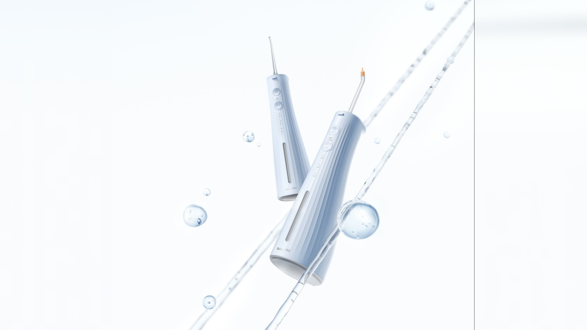
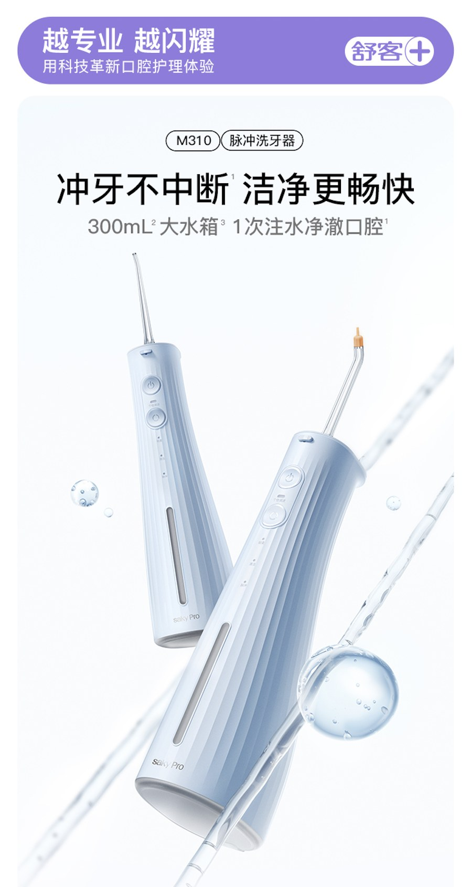
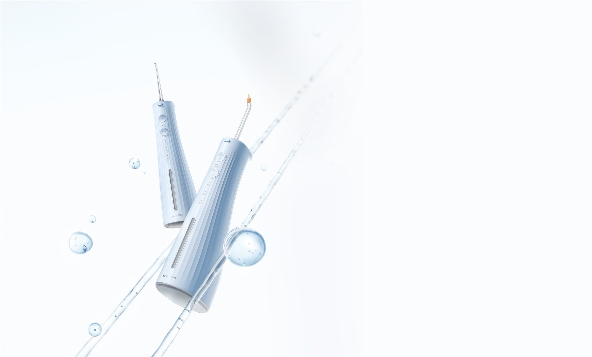
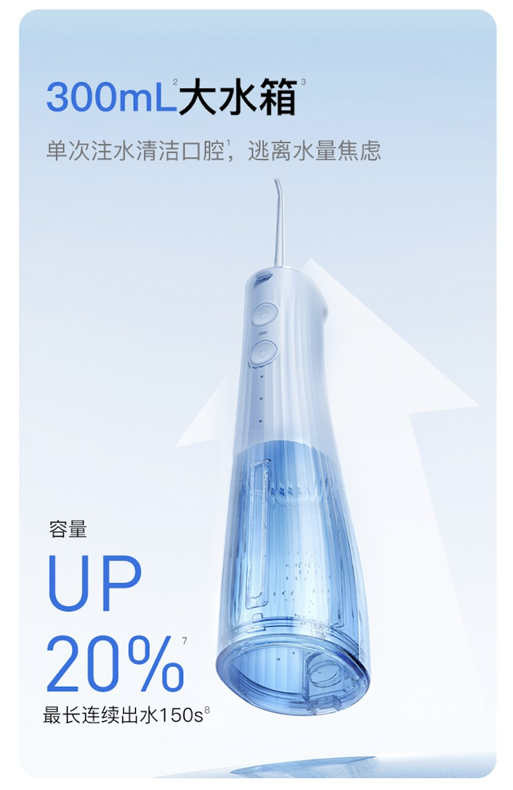
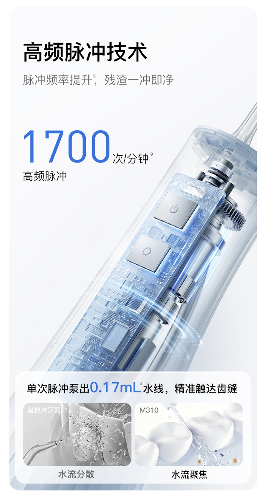

← Work — 06 / 15 · Product Visual DesignLarge-Tank Water Flosser
A profit-line launch for the water-flosser range, aimed at entry and mid-tier demand for a larger tank — with the visual decided by consumer testing, not taste. 冲牙器线利润款新品，目标为满足中低端大水箱需求，前期进行 AB 测完成消费者喜好测试后进行视觉转译。


Background
设计背景
This is the profit-line addition to the water-flosser range. The goal is straightforward: satisfy demand for a large tank in the entry and mid-tier price band, where capacity is the most direct reason to buy.
Before any visual work, an A/B preference test established which tank expression and which set of images consumers actually preferred. The conclusion was then translated into the layout — so the design follows the audience rather than substituting it.
这是冲牙器产品线的利润款新品，目标很直接：满足中低端市场对大水箱的需求 —— 容量是这个价位段最直接的购买理由。
在动视觉之前，先用 AB 测完成消费者喜好测试，确认哪一种水箱表达、哪一组画面更被接受，再把结论转译成视觉，避免用审美偏好替代用户判断。
Approach
设计思路
Profit-Line Launch — the decisions that set the direction. 大水箱冲牙器 —— 决定方向的几个选择。
-
01
Test before you draw先测，再做
An early A/B preference test fixes the direction; visual translation only starts once the answer is in.
前期 AB 测完成消费者喜好测试，方向确定后再进入视觉转译。
-
02
Tank capacity is the headline大水箱作为第一信息
Capacity and session length occupy the first layer of the page; everything else is ordered by usage scenario.
把容量与续航放在首屏第一层，其余卖点按使用场景排序。
-
03
Clean product language for a value price用干净的产品语言承载价位
White background, water-toned material and a restrained layout keep visual noise low, so the product reads as clearly on shelf as on the detail page.
以白底、水感素材与简洁版式降低视觉噪点，让产品在货架与详情页中同样清晰。
Outcome
成果展示




- Positioning
- Profit-line SKU for entry and mid-tier large-tank demand冲牙器线利润款新品，面向中低端大水箱需求
- Method
- A/B preference test → visual translation前期 AB 测 → 视觉转译
- Deliverables
- Claim order · KV · detail page卖点排序 · 主视觉 · 详情页
Next project / 下一个作品
Gift Box Campaign